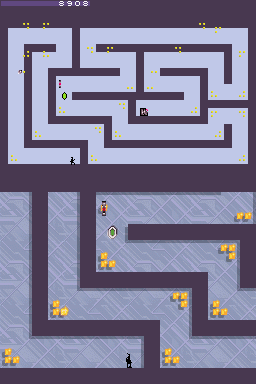
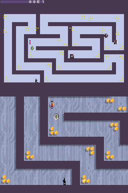

5.1 Levels and Stats
Graphics are you have probably seen are composed of small tiles that get assembled to create a greater image. Levels are much the same although they tend to come in four broad categories, although unlike graphics there is no underlying hardware to shape things and that means anything goes. The items of interest are the level itself, the placement of static objects and the placement of interactive objects (enemies and such which also includes scripted events) and in many ways can apply to 2d, 3d, text and higher dimensions of games.
- All in one
- Layers of the items of interest
- Procedural generation and dynamic content. Depending upon what level you are editing at this can still manifest as one of the others.
- Linked lists of items (maybe with choices/branches).
First “All in one” need not be static or large, this is as you might just need to do something like define the starting/entry point of your enemies and then the game will take over from there. For all but the simplest games though it quickly gets unmanageable unless you make a complex format, to this end it is falling out of favour with the others taking over. Should you be editing older arcade style games or throwbacks to them then you might still encounter it and the GBA/DS has no shortage of throwbacks and ports of old games.
Layers of items of interest will tend to be broken down into categories (the background, the level itself, the enemies, the extras….) and stacked by the game engine (indeed this is a feature many walk through walls cheats have used and on the reverse side how many “hidden” areas are made). A game might break it down further than that and define the level using a grid system (each piece being assigned coordinates or indeed define it entirely block by block in a given pattern). It should also be noted that 3d games sometimes attempt to detect collisions by the 3d models themselves and their locations; you surely would have seen or experienced an occasion where a character in a game fell through the floor or through a wall. However some other times they define what goes by another file, usually generated at the same time the level model is exported, with the .KCL files seen in recent versions Mario Kart being a great example of this, such things can also be used to allow a finer level of control (in the Mario Kart example there is road, completely off road and off road enough to slow you down) as trying to calculate this according to where textures are mapped would be a nightmare; given games still tend not to autobreak for a new line of text then imagine how much more would be needed to calculate player/enemy locations related to textures. It should be noted that 2d games quite often use things like the OAM to help control where things are on a level.
Procedural generation was originally quite a common concept with many notable early games like Elite using it to great effect. It fell out of favour for a while with only a few notable uses like dungeons in dungeon crawling games like Diablo and Dungeon siege, it is now getting some more attention as people are learning to constrain it (you have some points a given distance apart, some extras and then you generate everything in between those points while making sure you have a route between them in game) and use it to enhance other games (the many guns of the Borderlands series being a good example). With regards to the it manifesting as the other types of levels mentioned in this section then procedural generation can just mean when the game loads up it makes the file and then stores it in memory as one of the other methods for use during that game. Dynamic is reserved for things like GTA that do not model an entire city but just the area a given distance from the player, however this does extend to things like enemies only starting to move when you are just off screen, a trick which goes back to the earliest devices.
Linked lists are usually reserved for adventure games like myst, visual novels, puzzle/quiz games and similar works but aspects of it can appear in anything at points like games where later events depend on your choices earlier in the game (a branching story) or you have a conversation with choices in a game the underlying system might look a bit like this.
It should be mentioned at this point that linked lists is actually a programming term; each event is called a node and it contains the data used in the event and the location of the next node which can be anywhere and can be changed at runtime quite easily. Linked lists and their variants (doubly linked lists and trees to name two of the common ones) certainly do exist as game levels and storage a game might use to remember choices, however a lot of levels that use these sorts of techniques are in practice closer to arrays (items decoded one after the other) or scripting similar to the Wizard of Oz and SSEQ audio.
On top of all this is scripted events which are very common and only getting more so. Here events will happen when certain conditions are met (certain conditions and locations/areas in a level).
Compared to a lot of other areas of hacking the practice of level hacking does not get as much attention until a game has tools made to parse/view levels, at this point the amount of edits available for a game often explodes. Naturally platform games, RPGs with platform elements, strategy games and racing games are prime targets for this sort of thing (Pokemon, Zelda, Metroid, various versions of Mario platformers, Mario racing titles, Advance Wars, Fire Emblem and Sonic platformers being prime targets over the years) with all sorts of hacks being made (remaking old games, making boss rush modes, tweaking levels, hard modes right up to total conversions where the original game is mostly gutted save for the engine and a new game made on top of that). Most of these have examples of things you can study in depth and it should be noted that plain swapping of files can have interesting effects; indeed swapping levels can make reverse engineering easier as will be seen in the example reverse engineering of a level.
An interesting technique which has taken off on the PC but has been around for a while is watch the game memory as levels can be streamed or might need to be manipulated at play time and fog of war is especially good for this. It plays right into it as well but much like changing the width of your hex editor to see patterns in pointers, text and more you can line up memory dumps (again they can change which brings in cheat making type arrangements) and if you colour them it can make things even more apparent.
5.1.1 Example tools
The following is a list of a few more well developed tools for the DS and some source code/format explanations with a worked example in the next section.
There are plenty of other editors you can find for various games if you go searching.
New Super Mario Brothers Treeki’s New Super Mario Bros Documentation
New Super Mario Brothers was Nintendo’s throwback to some of the original 2d Mario games but as already covered it instead opted to use the 3d hardware. This did not stop the levels from being hacked fairly shortly after launch although it would be a while before more fully featured programs and listings appeared.
Advance Wars Wars World News which is probably the foremost advance wars hacking related website has a lot of information on the various games in the advance wars franchise.
Mario 64 The DS got an enhanced port of the N64 version of Mario 64 and level editors eventually appeared for it.
Filetrip download (XML version of the object database also available there).
The image below shows a nice test map which are always good to search for as they will often be quite simple and contain most, if not all, the items available for a game.

PIC
Mario kart MKDS course modifier
Mario kart had filesystem level swaps fairly early on (indeed it was probably one of the first games to see DS level hacks) and eventually the actual formats were reverse engineered and level editors started to be made.
5.1.2 Level editing techniques
With some basic theory covered it is time for some practical stuff. A selection of methods exist to reverse engineer levels and reverse engineering shares a lot of concepts between ideas but levels have a few slightly more likely to be useful. Techniques include but are not limited to
- Memory viewing (preferably realtime but savestates can help with this)
- Byte analysis
- Comparing reverse/slightly tweaked levels
- Corruption and alteration
- In game or other level editors (on the PC the offerings for level editors are usually skewed towards usability and away from actual ability for good reason but they can still edit things)
- Comparing levels in game
- Size analysis
- File replacement/swapping
- Assembly analysis (as always)
5.1.3 Worked example
N+ (N plus) is a DS port/remake of a popular flash game and features a lot of levels of a fairly simple nature making it a fairly good candidate to see some of the techniques at work. Unlike the text hacking section things here are probably not going to be broken down by example and what is here is going to be more of a showcase of techniques than following the technique that will lead to level format being fully reverse engineered; most of the techniques here would be able to reverse the level format in a reasonable timeframe by themselves and there is usually not a great deal of benefit to swapping methods as often as will be done.
Screenshots of levels 0 and 1 (episode 0 in the game).


Rather nicely the game provides files named nds000.lvl and nds001.lvl in the level directory.

PIC
Both start with something similar, have a lot of 0,4 and 1 nibbles (no idea if it is a 4 bit system) and then end on something else entirely which is actually shorter in the case of nds001.lvl although the level is somewhat simpler. The big difference between the levels though is the addition of the moving hazard (the level editor calls it a floor drone). This might be the E that is not present in the original level.
Still a bit of corruption to see if the levels are indeed what they claim to be. Guided corruption for this one rather than simply replacing things with random data so a bunch of what were mainly 0 at 10 hex though 1F hex were replaced with 4 hex. Giving

PIC
That would be the entire bottom row and another one at the bottom left of the level. Going back to the main menu though gives

PIC
That it is a copy of the next level and there is no gold, trap information, hazard information, door or switch locations in the images there it would appear to indicate a layered level design (parsing and removing data is doable but not ideal for low powered systems) but more on that later.
Replacing the 20 hex to 2F hex this time with a run of 2 hex changed the next row and appears to indicate a bottom upwards level design (first rows first) and something of a bitmap approach rather than coordinates. The somewhat static editing is OK and would reveal a lot if it were to be pursued, however memory viewing proved too much to stay away from.
One full dump and a search for the new 44444422222222 hex (not assured to work by any means but not compressed in game means probably not compressed in ram either) netted a single location at 37CFD0 or in the DS memory 0237CFD0.

PIC
Before the ram editing could commence though the memory/level was seen to be refreshed from the ROM itself between that view and the level itself and the level was not regenerated in real time. However the level overview/layout was regenerated from ram if a refresh was forced15 and the level was not fetched from the ROM itself between those, a refresh could be forced by changing the map preview (L and R buttons) or allowing it to scroll round.
PIC
Some experimentation said each “line” in the level was about 18 hex long although it could vary between levels. 00 appeared to be the blank/default state and zeroing out everything to what would be 188 hex in the original level (where the E0 is located) left a blank screen. Further experimentation said 4 bits was not the way forward (playing with the level editor provides an 8 by 8 grid so 64 potential options, although a few of those looked to be duplicates and maybe rotations) and maybe even 8 bits was not it, or at least the level might change depending upon what is next to it or with alignment.
Before going on with the items now that we armed with the knowledge that things might be 18 hex long. Looking at nds001.lvl in a hex editor, deleting the presumed objects list, the header section and colouring some of the non 0 pixels before flipping the resulting image.

It is well worth a try to look for such things/patterns in memory if you can.
Items The level editor also made mention of the potential for items and the above work would seem to confirm that they were elsewhere but checking anyway the fully zeroed out level section (here presumed to be where the 0,4 and 1 stuff stopped being the norm) still had items and continuing to zero things out after the end of the level broke it and removed some of the items.
PIC
As everything that survived was still in place but location shifted it says things
The change in colour is odd but not entirely unexpected as the level editor allows for a change in background colour, however as there is garbage at the top of the screen and no timer bar is is more likely the game detected a “time out” which might be another reason for the change in colour.
The lack of the ninja can be explained by the starting position probably being axed along with the lower levels of gold pieces.
The shift of everything could probably be explained if the origin of a coordinate system was changed and most interestingly of all the gold diagonal from the bottom left now shifted to the right hand side of the level has become one gold and a horizontal platform (called a Thwump in the editor).
Another more precise edit caused a crash (odd as the corrupt state on the right hand image above could be exited via normal in game commands and return you to the menu) and another edit leaving the initial bytes of the items section intact made for a working level but with a few changes (3 bytes at 1D4 changed from 4947 1C to 0000 00 or about 4C into the items location section) messed up everything after the door switch shifting things and creating new items. Suspecting an alignment issue the lone 00 of the three bytes was changed back creating the right hand image.

Even if corruption had not revealed the item layout location then with the pre level stuff not being anywhere near enough to store the relevant amount like the locations of the gold that leaves the end of the level file and the somewhat different data there. Equally the next level (nds001) has few items and it is smaller.
84 pieces (in 24 clusters) were counted as was a door and a switch, although it is noted that the door in the level editor appears to have a switch as part of the deal so it might not be two items. Somewhere along the lines that set the time for each level, if indeed there are some, might also be necessary to find.
The minimum required information is probably the item itself, the x coordinate and the y coordinate. Additionally in the level editor the behaviours of the drones can be specified (4 drones and 4 behaviours each) but an additional field across an entire array/matrix likely to contain hundreds of items versus just defining another item tends to mean the just defining another item option wins unless by adding an entry to the matrix/array the code will be aligned to a given value in which case that often wins. Of course just because it is a good idea does not mean the programmer actually did it (again more than a bit of ROM hacking is about fixing bugs and errors the original developers made).
Gold is the most common item so the logical step would be to do a distribution of the file, however nothing much turned up here at first glance and considering the gold clusters might be different items you might have to consider that.
With two bytes there is only room for 66 items from the first level and this probably means clusters were chosen if that was the case (odd because the level editor allows for defining single pieces as does elsewhere).
Corruption, minor alteration and pondering how someone should do it is rapidly getting troublesome but episode 0 level 4 (nds004.lvl) has a simple repeating pattern
PIC
The level in question (highlighted section being the item data)
PIC
14 instances of mines of each arrangement
12 instance of gold
A switch
A door
A starting point
Changing a couple of the 53 hex values to 54 hex netted a minor change (the blue timed mines on the bottom level; concepts first seen in relative search can apply here as well) but other changes of the same values did everything from break the level to completely crash the game (either instantly or runs for a second and then stops). This probably then points to format done with bits at a time rather than bytes or maybe rather than coordinates it was a distant relative to the linked list where the previous entry defines the next one.
53 hex = 0101 0011 binary
54 hex = 0101 0100 binary

PIC
Changing the start from C0 to E0 (1100 0000 to 1110 0000), ignore the timer.
PIC
Editing the start makes for odd changes to the end of the items section and was looked at.
The final FC was changed to FD to produce the leftmost image and then FB which produced the rightmost image


That it changes a single piece does not do well for the grouping theory, although it is technically the rightmost top piece that has been changed (there is no item that is both higher and further right). A single value (note not binary) change changes location by 25 pixels with right on the level being positive. This speaks more to items being defined bottom up, line by line (but with the ability to “skip” lines unlike the obstacles) and left to right. FE however stuck it above the rightmost gold pieces (a change of 57 pixels) but changing to F simply moved 25 more pixels from there to the right so maybe a different type of grouping. This pattern held until 7 was picked, at which point the following happened

PIC
It should be noted 7 does not have the upper bit as a 1 where the others did and looking at what happened to the image the upper piece of gold does appear to be on the rightmost part of the level again (7 hex = 0111 binary, F= 1111 binary).
Changing the F part did all sorts of crazy things similar to above including adding invisible items, things to the map that were not on the level but it is desirable to find the previous piece of gold as that would give a clue as to the length of values. It is also not completely certain that items are grouped by themselves (could be gold in one section, mines in another, other items in another).
Things were not immediately apparent here so returning to the level editor.
Cheat search was used to see what changed when things were added or removed from a location (a basic difference search in this case)
020DFB00 seemed to be a counter/pointer limit (changing it to a lower value would remove items added later)
020E0840 appeared to be the selection box location
\[to finish\]
The beginning of the levels 3 hex through 9 hex always seemed to be ??306945EA1004 where ?? could be 00,01,02,03,05,07,08 and 09 with 03 being the most common by far and 09 only seen in nds194, nds175 and nds165 and 08 once in nds182
00 through 02 hex appeared to be $$ where was usually 84 or 04 and but was changed to 7C in nds052, nds026 and nds160
$$ was often 7F or 80.
Also as the items stayed in place it would appear there was something to possibly indicate the item section which is usually where the header steps in. No apparent pointers but it could well be a calculated value.
\[to finish\]
Timers Timers in levels were of interest so an item section was transplanted wholesale from another level and the difference being zero padded. It created not a perfect replica of the items but a close one as there were additional items, the timer however was the same as the what the original level would have been thus implying that it was not stored in the level file. As a further test a level was outright replaced with another yet the timer for the level remained the same as the original level’s; it was different when that donor level rolled around but do make sure of this when you change things as there are few worse feelings than realising you wasted a lot of time over a coincidence.
5.1.4 Stats
Although games can be built without using this concept it is surely fairly easy to see how item, enemy and player statistics/characteristics can be used to make for a better gameplay experience, if it can be used in a game, or added into one, then they may want to be edited. ROM hackers are then concerned with the storage methods and limitations of these statistics.
The limitations are usually fairly obvious things like if you find your stat is defined as an 8 bit value you have 256 possible combinations at most, unless you change how it all works which can be quite difficult. Indeed the only times it really gets attempted is for converting games from 16 bit encodings to 8 bit encodings, or if the game uses a more conventional database format and access technique for the information in question which allows for such a level of manipulation.
How the statistics themselves are stored is as many and varied as anything else you have seen in this document; these things can be basic binary tables (extremely common in older games, ports of them and not uncommon in newer titles), something resembling a CSV file (rows of information separated by commas), pages of XML esque languages or indeed XML itself, proper databases (not so much on the handhelds but home consoles and PC games can and do use SQLite type arrangements all day long), or in the less fun scenarios buried in with the game code itself (it might not have been that way in the source code but compilers are wonderful things and will sometimes optimise code for you).
The databases can be self contained, they can be linked tables of values, they can use pointers, they can assume aligned values (similar to how you probably lined up the names and pointers when pulling apart a container/archive format), can be scattered across a file, can be calculated (8 bit means 256 combinations but nothing stopping you having a range of 1000 to 1255 or more commonly for things like health where you will multiply a constitution value by a given amount and add a bit go get a health value) and much more.
In short they are usually a database of sorts so database programming comes into effect, this is not going to be covered here as it is very long and probably not that useful as games tend to be fairly simple (they tend to be small and static meaning no benefit and potentially even downsides for using high level database concepts), fairly logical (although do not count on plain values being there) and unlikely to be truly obfuscated or encrypted.
Before turning to assembly hacking though do give the thought exercise type method a try; you can get quite far just by working through what you would do (240 enemies with a name, 5 stats a piece that do not go beyond 255, each of those enemies is linked to another, of the five elements in the game it is weak to how many of them?). What you would do and what a programmer will have ended up doing might not be that different, or at least they would have enough in common that you can start figuring out the rest in a similar manner to how you would fill in the missing parts of a text encoding.
It should be noted many in game encyclopedias/bestiaries will have been made from the database before the game is put together so do not expect things to change there if you change the game, or indeed the reverse and expecting changing things there to change the game.
On another note in game AI may well be finely tuned to the original game stats and changing them can render the stock AI far worse than it is in the stock game, however we will cover that more in the AI section and if you just want it for multiplayer with humans then carry on.
pipian.com ierukana has a nice example of pokemon stats.
5.1.5 RPG randomiser
The concept has been around for some time but in recent years it really seems to have taken off. Games like Pokemon, Medabots RPG as well as more conventional “RPGs” often have defined zones for enemies or predefined battles, or in the case of medabots you will only be fighting medabots made of the same parts. You then get to figure out a way to alter this. Do note a lot of games might provide you with something to look at to influence this. Classic examples would be a “conservation” area where you visit old enemies, a bug like pokemon sea tiles, an arena of some form or even certain kinds of mulitplayer. Similarly a game might change the monsters in an area for a sequence or something and that can be very valuable. Alternatively it can be very simple and you only have to influence the outcome of the random number generator; if a game has a bestiary then if the enemies from a similar area have similar numbers it could well be a contained random number generator (generate me a random number between 4 and 6, or more likely generate me one a normal random number and add or multiply to get me to the number for this map). It is up to you to see whether you wish to try to stop end game bosses potentially appearing in a start area, though such things can be fun.
Having something evaluated repeatedly without the need for a full reset is often desirable in breaking cryptography and it leads to something called a replay attack. It should be noted savestates are not terribly useful here as they have a habit of overwriting memory and in doing so you lose your edits. Likewise desmume appears to store enough of the ROM in memory that a simple “system reset” is not enough and you will have to close and reload the now edited image.↩︎